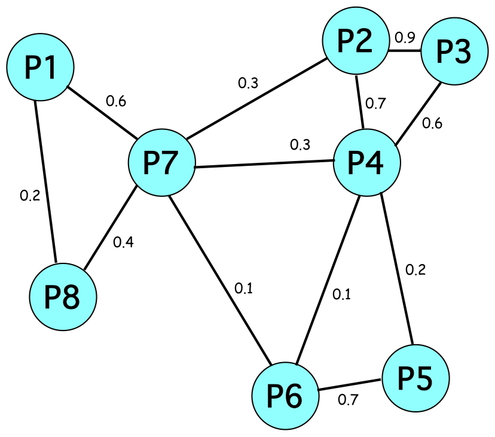

Sets of Proofs

Generalized Clustering Coefficient
- Variant of the
original GCC
- Weighted graph
- Artifact sets as nodes
- Jaccard similarity as edge weights
- Triplets, jaw edges and closing edge
- Triplet weight = average of jaw edges
- Csw =
∑ (triplet_weight × closing_edge_weight)
------------------------------
∑ triplet_weight
Lower Csw ≡ Greater Diversity
- Whole example = 0.14
- P1-P7-P8 = 0.37
- P2-P3-P4 = 0.72
- P2-P4-P7 = 0.39
- Set of same proofs = 1.00
- Set of completely different proofs = 0.00